Plantes ligneuses
Les arbres
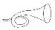
Dotés d'une véritable forme d'intelligence (ce qui est désormais une certitude scientifique), les arbres étaient anciennement répartis entre Pinophyta et Angiospermes.
Actuellement, on les retrouve dans des clades nommés :
AcrogymnospermaeMesangiospermae (classe Magnoliopsida)
ci-dessous classés par ordre alphabétique de noms de genres
 René Barbier - Poèmes - par Carolyne Cannella
René Barbier - Poèmes - par Carolyne Cannella
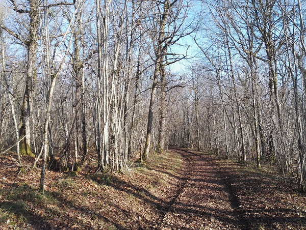
Les Hérodats, 18 janvier 2022
Leur premier fossile connu, Armoricaphyton chateaupannense, datant d'environ 407 millions d'années, a été trouvé en Anjou, dans le Maine-et-Loire, à Chateaupanne (Montjean-sur-Loire).
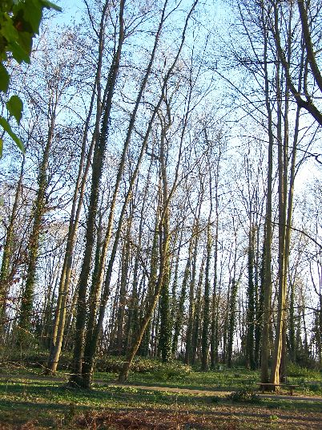
Sens, Parc du Moulin à tan, 9 mars 2014
Les arbres
Ils nous intéressent vivants, même n'offrant pas leurs fleurs facilement à notre vue et n'étant plus sauvages car cela fait des millénaires que la forêt primaire a disparu de France, que les forêts sont cultivées et que la génomique est une technique très employée en sylviculture.
Ils nous intéressent morts car, comme l'écrit A. Baraton : « Si les arbres vivants captent les émissions de carbone, le bois mort est indispensable à une multitude d'insectes, d'oiseaux ou de mammifères. [...] les très vieux arbres et les arbres morts forment une multitude d'habitats qui accueillent une biodiversité aujourd'hui menacée comme les chouettes et les chauves-souris arboricoles.
[...] Il est aussi grand temps de laisser vivre en paix les arbres vénérables, qui n'ont de valeur que par leur beauté et leur histoire. »
Même en France et grâce à leurs savoirs ancestraux, les Kogis, descendants des Tayronas d'Amérique du Sud, pourraient nous aider à reconstituer cette biodiversité.
Les arbres ont des grandeurs variables :
- de 1ère grandeur -- 30 à 50 m
- de 2e grandeur ----- environ 20 m
- de 3e grandeur ----- 10 à 15 m
Ils ont également un port particulier dit port arborescent.
Ce sont leurs bourgeons situés les plus haut qui entraînent leur croissance verticale, ce que l'on nomme acrotonie.
Arbres, plantes, fleurs : la galaxie végétale
Pour rester verticaux les arbres sont amenés à corriger leur éventuelle inclinaison, ceci grâce à un type de bois particulier que l'on nomme bois de réaction, un bois différent selon que les arbres appartiennent à la Division des (Gymnospermes) Pinophyta ou à celle des Angiospermes, d'où notre classement suivant, avec un arbre "à part", le Ginkgo biloba.
Clade des Acrogymnospermae
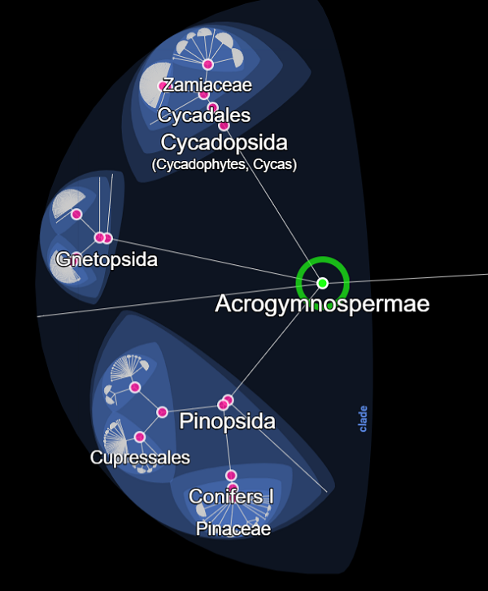
© Lifemap
Pour retrouver leur verticalité, ces arbres développent, sur leurs faces inférieures, un bois de réaction dit bois de compression qui se dilate.

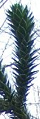 | Araucaria araucana (Molina) K.Koch., le pehuén de la famille des Araucariaceae |
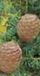 | Cedrus atlantica (Manetti ex Endl.) Carrière Cèdre de l'Atlas |
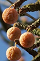 | Ginkgo biloba L. Ginkyo, noyer du Japon, un arbre panchronique/relicte |
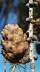 | Larix sp. Mélèze de la famille des Pinaceae |
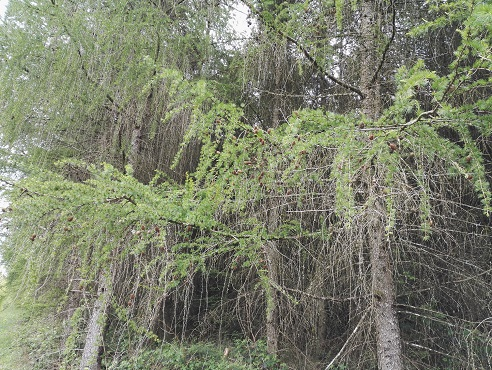
Mai 2019 - Mélèze dans la Nièvre.
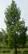 | Metasequoia glyptostroboides Hu & W.C.Cheng Métaséquoia de Chine, séquoia de Chine, sapin d'eau |
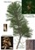 | Pinus nigra J.F. Arnold subsp. nigra Pin noir, pin noir d’Autriche |
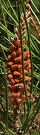 | Pinus pinaster Aiton Pin maritime |
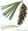 | Pinus strobus L. Pin de Weymouth, pin du Nord, pin blanc du Canada |
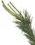 | Pinus sylvestris L. Pin sylvestre |
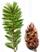 | Pseudotsuga menziesii (Mirb.) Franco Sapin de Douglas, pin d'Orégon |
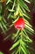 | Taxus baccata L. If, if commun, if à baies |
Clade des Mesangiospermae
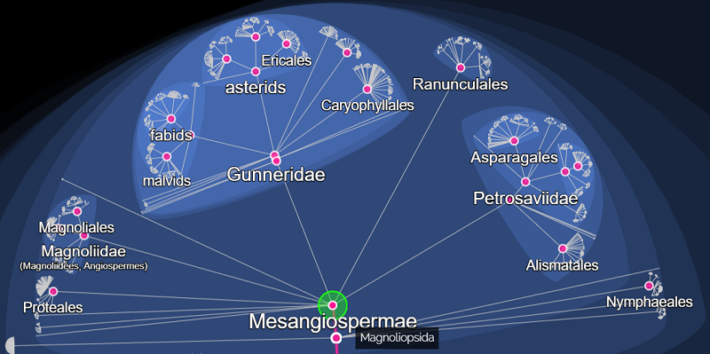
© Lifemap
Pour retrouver leur verticalité, ces arbres développent un bois de réaction dit bois de tension au comportement paradoxal. Il se rétracte puis, pour redevenir vertical, il se contorsionne. Après s'être courbé il se décourbe.
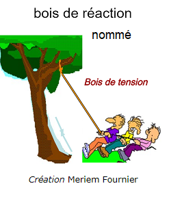
Le kantele est un instrument à cordes finlandais,
initialement en bouleau (Betula), désormais en frêne (Fraxinus) ou en érable (Acer)
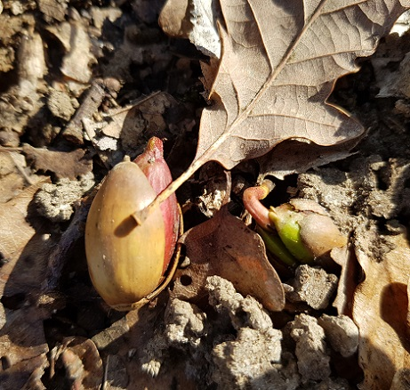
Photo © Claire Martin-Lucy - Lac Sauvin, 25 mars 2019
Lorsqu'ils commencent à germer les glands des chênes ont une priorité :
eau et sels minéraux leur étant nécessaires, ils enfoncent sous terre leur pivot, puissante et longue racine verticale.
Ensuite ils peuvent s'occuper de leurs tiges.
Alors ? Chêne sessile ou pédonculé ?
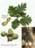 | Quercus petraea (Matt.) Liebl. Chêne sessile, chêne rouvre |
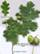 | Quercus robur L. Chêne pédonculé |
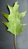 | Quercus rubra L. Chêne rouge d'Amérique |
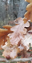 | Quercus x kerneri Simonk. Chêne de Kerner |
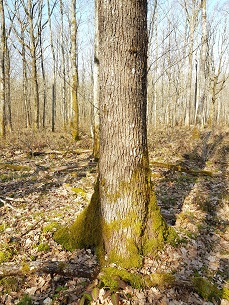 | ||
| Photo © Claire Martin-Lucy |
Avec ou sans préoccupations botaniques, comment ne pas admirer, dans le beffroi de la cathédrale de Sens, le bois des chênes (ces Quercus de la famille des Fagaceae) d'une forêt aujourd'hui disparue sur le plateau du Gâtinais, celle de Fouchères, une petite commune qui doit son nom aux fougères ?

Au XXIe siècle, ce sont des chênes centenaires qui ont été abattus pour reconstruire Notre-Dame de Paris.
| Robinia pseudoacacia L. Robinier faux acacia | |
| Salix fragilis L. Saule cassant, saule fragile | |
| Sorbus aucuparia L. Sorbier des oiseaux, sorbier des oiseleurs | |
| Tilia cordata Mill. Tilleul des bois, tilleul à feuilles en cœur, tilleul à petites feuilles | |
| Tilia platyphyllos Scop. Tilleul à grandes feuilles, tilleul à larges feuilles | |
| Ulmus laevis Pallas Orme blanc, orme pédonculé | |
| Ulmus minor Mill. Orme champêtre, ormeau | |
| Ziziphus mauritiana Lam. Jujubier de Maurice |
Les ARBRESArbustesArbrisseauxSous-arbrisseauxPlantes sous-frutescentesLianes
Forêts et bois : des écosystèmes complexes
Plantes ligneuses
 Odd Behavior - Au delà des arbres
Odd Behavior - Au delà des arbres
 | |